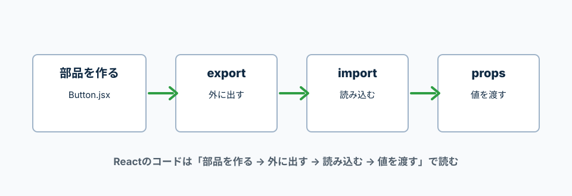

Reactのコードを読んで怖くならないためのJavaScript文法。
モジュールはexportで外に出し、importで別ファイルから読み込む。
分割代入は、配列やオブジェクトから必要な値を取り出すための書き方。
Reactでは、ファイルを分けて部品を作り、別ファイルで読み込んで使う。
コードを読む時は「どのファイルから来た部品か」「親から何を受け取るか」を見る。

exportは別ファイルで使えるように外へ出す。
importは別ファイルから読み込む。
routes.js
export const ROUTES = {
HOME: '/',
CATEGORY: '/category',
};
AppRoutes.jsx
import { ROUTES } from './routes';
console.log(ROUTES.HOME);
export const ROUTES
ROUTESという定数を、別ファイルから使えるようにしている。
import { ROUTES }
名前付きexportされたROUTESを読み込んでいる。波括弧が必要。
'./routes'
同じ階層にあるroutesファイルから読み込むという意味。
default exportは、そのファイルの代表として1つだけ外に出す書き方。
Reactコンポーネントでよく使う。
Button.jsx
const Button = () => {
return <button type="button">登録</button>;
};
export default Button;
Index.jsx
import Button from '../components/Button';
console.log(Button);
export default Button
Buttonをこのファイルの代表として外に出している。
import Button
default exportを読み込む時は、波括弧なしで読み込む。
分割代入は、配列やオブジェクトから必要な値だけを取り出す書き方。
useStateやpropsでよく見る。
const user = {
name: '太郎',
email: 'taro@example.com',
};
const { name, email } = user;
console.log(name);
console.log(email);
const colors = ['red', 'blue'];
const [mainColor, subColor] = colors;
console.log(mainColor);
console.log(subColor);
const { name, email } = user;
user.nameとuser.emailを取り出して、nameとemailという変数にしている。
const [mainColor, subColor] = colors;
配列の0番目をmainColor、1番目をsubColorとして取り出している。
Reactでは、propsを受け取る時に分割代入をよく使う。
{ title, onClick } は、props.titleとprops.onClickを取り出している。
const TodoButton = ({ title, onClick }) => {
return (
<button type="button" onClick={onClick}>
{title}
</button>
);
};
export default TodoButton;
({ title, onClick })
親コンポーネントから渡されたpropsの中から、titleとonClickだけを取り出している。
onClick={onClick}
受け取ったonClick関数を、buttonのクリック処理として渡している。
{title}
JavaScriptの値をJSXの中に表示している。
三項演算子は、条件によって表示を切り替える書き方。
条件 ? trueの時 : falseの時、という順番で読む。
const isDone = true;
const label = isDone ? '完了' : '未完了';
console.log(label);
isDone ?
isDoneがtrueかどうかを確認する。
'完了' : '未完了'
trueなら'完了'、falseなら'未完了'を使う。
&&は、左がtrueの時だけ右を使うという意味。
Reactでは、条件を満たす時だけ要素を表示したい場合によく使う。
const errorMessage = '入力してください';
const view = (
<>
{errorMessage !== '' && <p>{errorMessage}</p>}
</>
);
console.log(view);
errorMessage !== ''
エラーメッセージが空ではないか確認している。!==は「同じではない」という意味。
&&
左側がtrueの時だけ、右側のpタグを表示する。
||は、左がfalseっぽい値なら右を使うという意味。
空文字、0、null、undefined、falseなどはfalseっぽい値として扱われる。
const userName = '';
const displayName = userName || 'ゲスト';
console.log(displayName);
?. は、左側がnullやundefinedならそこで止める書き方。
APIのデータがまだ読み込まれていない時のエラーを防ぎやすい。
const response = {
data: {
user: {
name: '太郎',
},
},
};
console.log(response.data?.user?.name);